Spoiler warning. This site covers episodes 1–19 of the second book and the whole plot of the first “Shadows of Saintfour”, endings included.
I've read up to episodeEverything after that is hidden.
People
Tap a person to open their file: what we know about them episode by episode, and who they're connected to.
Nadine and Dex look the way they do in your game. Her family adapts to her look.
From the present
From the past
The “Shadows of Saintfour” newspaper
The school paper Nadine and Miranda make. New issues unlock episode by episode.
Predictions for the update
Episodes 20–23 will most likely come out on November 22. Place your bets before Saturday the 21st, 3 PM Moscow time (12:00 UTC): once the episodes are out, we'll see who guessed right. Until you press “Confirm”, you can change your answers. Everyone else's percentages show up after you confirm.
Read up to episode 19 first
This has spoilers for everything released so far. Pick episode 19 at the top and the predictions will open.
Evidence board
Your detective board. Pin characters, clues, screenshots, stickers and stamps, connect them with string and build your own theory. The board opens full screen.
What can't be explained
Hover over a photo to read what we know. Click to open it bigger.Tap a photo to learn more.
It's dark in here. Use your flashlight.
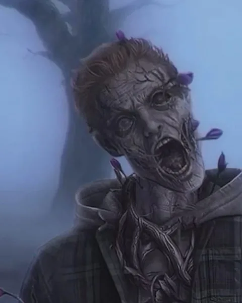
infectedThe boy from the prologue
ep.1 One of the people Howard sent into the zone. Who is he? Lewis Holt?
threatShadow
ep.1 Is this the same shadow that's been following Miranda? Now Nadine sees it too.
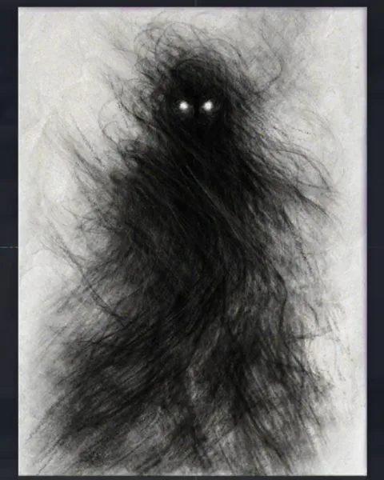
a shadow?Miranda's drawing
ep.2 This is how Miranda drew her fear. The same white-eyed figure that stood in the stall.
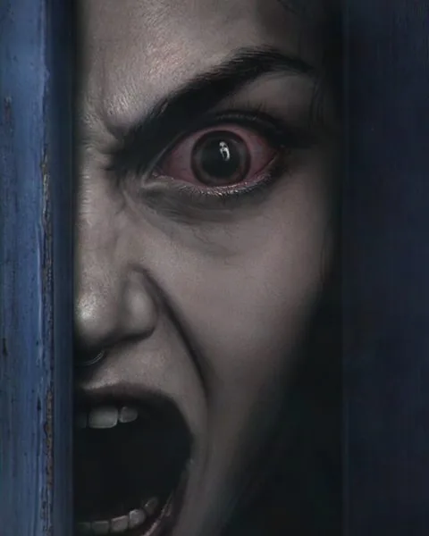
not her?Miranda in the doorway
ep.2 An acrid, sweet smell drifts out of the house. Her face changes before your eyes. Is this still Miranda?
not her?On the porch
ep.2 She stands in the doorway in the rain and doesn't move. What is she waiting for?
A silhouette behind the door
ep.2 Miranda is gone… So who is standing behind the glass?
threatThe Thing (Courage path)
ep.3 “I have twelve arms… Someone will kill everyone soon.” Is it a warning… or is it talking about itself?
threatThe Thing (Caution path)
ep.3 “You and me. Me and you… We'll grow into one skin.” And then it begs to be let out.
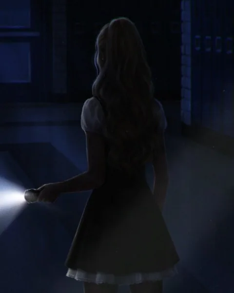
who?A photo from the Unknown
ep.4 Nadine from behind, taken right now. The hallway is empty… Who was holding the phone?
A calling voice
ep.4ep.4–5 It whispers by Miranda's locker. It calls… but where to?
threatTwo with roots
ep.4 Roots instead of arms and legs. The same ones that grew through the boy from the prologue?
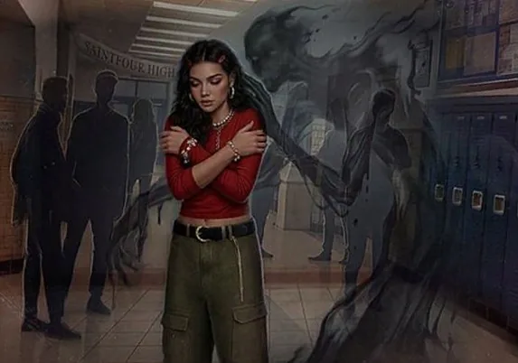
The shadow behind Miranda
ep.5 No one saw anything with their own eyes. But the film remembered who stood behind Miranda.
threatThe shadow at the junkyard
ep.5 It smells sweet, like hellebore. Alice is right there and sees nothing. The same one as in the photo behind Miranda?Right where Tom was found later.
infectedThe deer
ep.6 What is it doing in town and not in Old Saintfour?
Someone in the trees
ep.6 Nadine didn't notice them. Who are they? And how long have they been there?
Miranda
ep.6 “He's looking for you.”
The watchman
ep.6 “Did you want me to come out and play?”
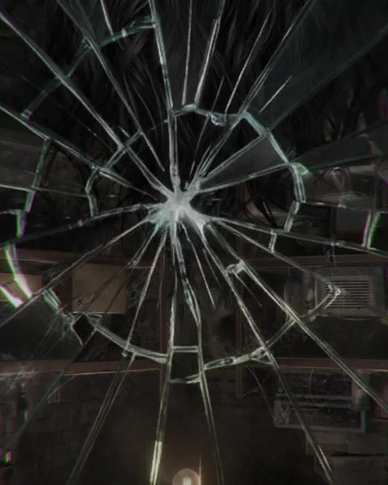
The mirror in the basement
ep.9 Someone's black hair crawls down the glass. It smells of strawberries.
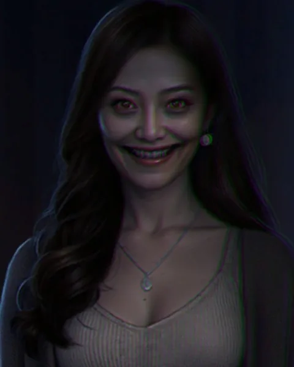
a dream?Mom by the stairs
ep.10 She just stands there, grinning in silence.
a dream?Under the bed
ep.10 The 911 “dispatcher” tells her to hide under the bed. Someone is already there.
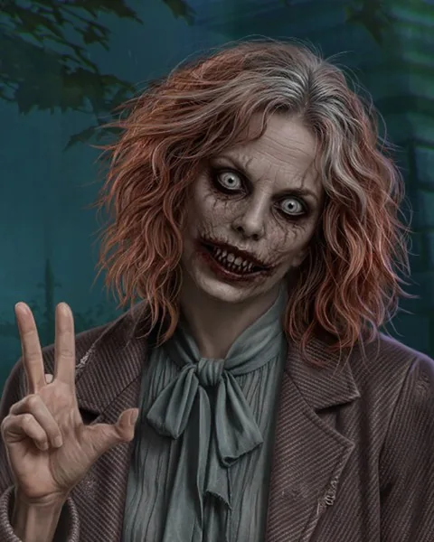
threatThe woman at the gate
ep.11 She repeats words from Nadine's dream. She smells of mothballs. Poppy didn't see her.
ep.16 In 1986 she wanders around Saintfour. She lures Nadine to a manhole full of boiling water: “You can't be here. You're a stranger. He told me.” She has no family and has been wandering the town for years.
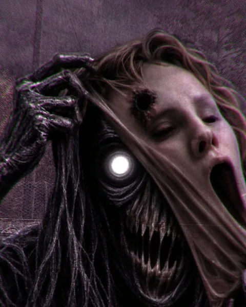
threatThe Object
ep.11 What's just outside the frame of the junkyard photo. It's tearing someone's face off. There's a bullet hole in its temple. “I need a fat, solid outline… EAT.” Old people and adults are no good to it, “there's no warmth left in them”. And “the prey is close, but touching it means death”. Is this Tom?
The ghost in the library
ep.12 She sits by the shelves in the library. Alice heard the child's whisper too.
ep.12 The voice turned out to be Poppy's prank: “I heard your cute little kids' story. Couldn't resist.” But the prank only explains the whisper. Only Nadine saw the girl by the shelves, Alice couldn't make her out. Maybe her imagination filled her in after the flyer about the missing girl. Prank or not?
The girl in the archive
ep.12 She stands in the aisle, a ball on the floor. Alice doesn't see her. Is this the girl from the flyer?
“It's all your fault”
ep.13 In blood, on the locker.
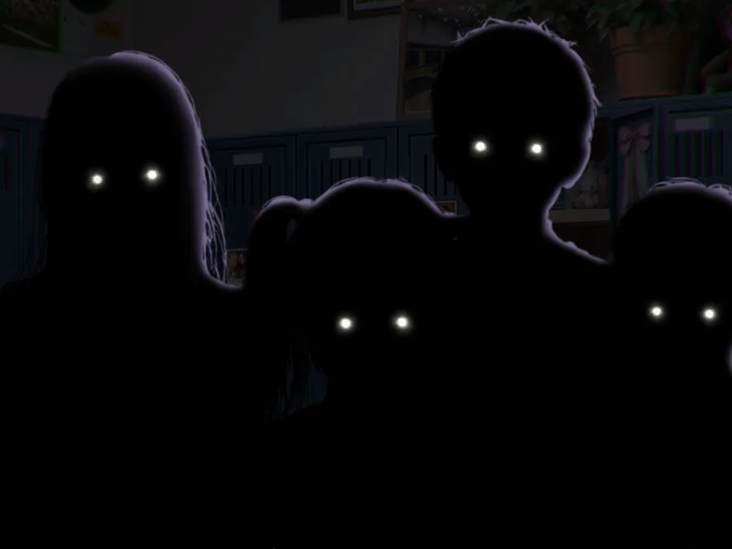
threatChildren in the dark
ep.13“Into the black and grasping wood, Where in the dark a demon stood… A little boy went out to roam… No use calling, he won't come home!”
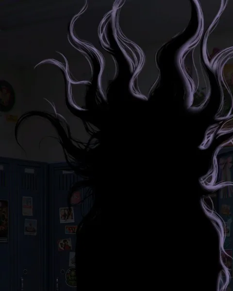
threat“Poppy”
ep.13 “I've always been here. Right behind you.” The real Poppy didn't see a thing.
Behind the curtain
ep.14 Someone is standing behind the curtain and moving along with Nadine.
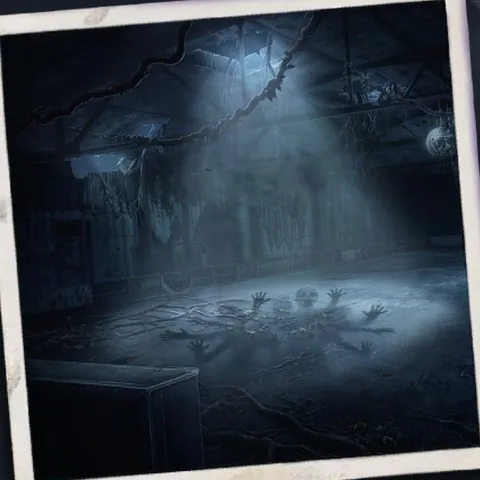
The roller rink photo
ep.14 The rink was empty. In the photo: hands and a skull.
The girl in the wheelchair
ep.15 In the Old Saintfour hospital. “They say you're crazy… Just like me.” It's Candy.
The Tower from inside
ep.15 The staircase goes straight up into the sky, with dozens of doors all around. One of them led Nadine to 1986.
The statue in the woods
ep.16 In the woods of 1986. Wooden, with horns, its body covered in ancient patterns. The Faun.
threat“Malcolm” in the Tower
ep.16 “Let me out.” “I'm hungry.”
threatThe voice in her head
ep.17 It stands behind her and pushes Nadine to take her own life.
Dead Nadine
ep.17 Nadine sees herself dead, overgrown with hellebore.
threatSomeone in the bed
ep.18 “Don't you like sleeping with me?” In the morning there are hellebore flowers under the pillow.
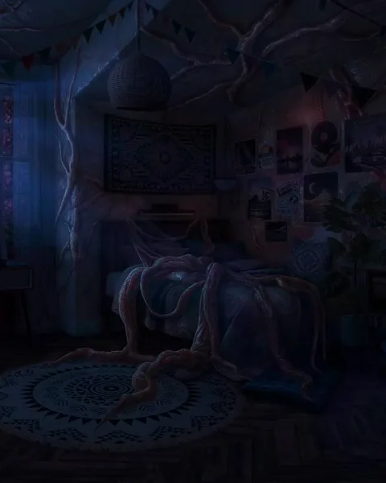
threatVeins in the room (42 Caution)
ep.18 Poppy stays over at Nadine's, and veins creep over the walls and the bed.
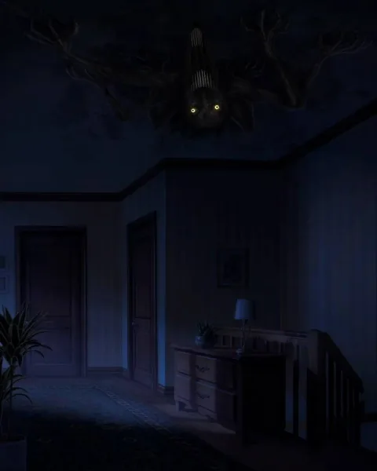
threatThe creature on the ceiling (42 Caution)
ep.18 A yellow-eyed creature sits on the hallway ceiling. Who is it?
threat“W-who is that?”
ep.19 Jimmy saw it. The click of Alice's film camera drove it away. Not just Nadine.
Clues
Hover over a photo to read what we know. Click to open it bigger.Tap a photo to learn more.
From the present
anomalyThe Tower in the Dead Zone
ep.1 There's a magnetic field anomaly around the Tower, and instruments go haywire. One of the people sent into the zone went inside.
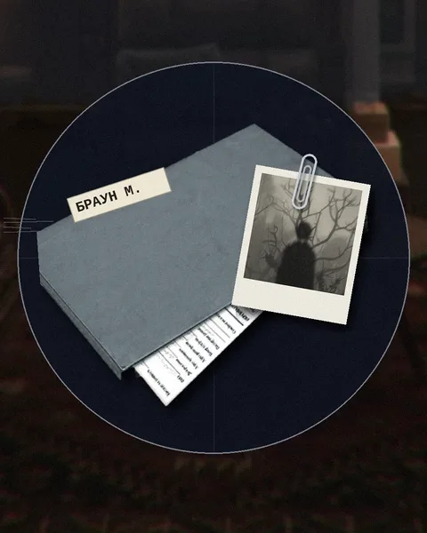
missingMalcolm's case
ep.1 The sheriff has the file. A missing person, probably one of the Owls. Not the first case.
videoThe video from Poppy
ep.2 Miranda is scared in the recording. What was she afraid of?
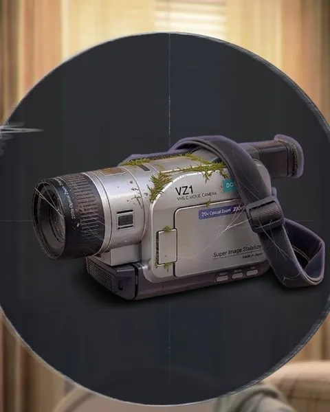
VZ1 camera
ep.3 It was lying on the floor in Miranda's room. Moss, cobwebs, pine needles. Looks like someone brought it from Old Saintfour.
erased“September 2017. C.M.B.”
ep.3ep.3–4Found in Miranda's camera. On the tape: the Tower, people with rifles and a woman screaming.The recording got erased, but Nadine still has a photo of the Tower on her phone.
ep.19 Darren took it from Nadine and hid it in the old camp.
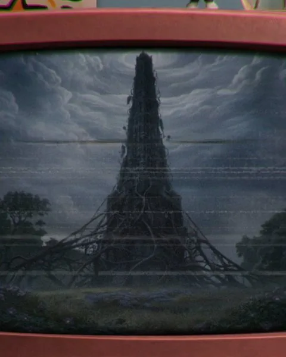
stolenThe impossible tower
ep.3ep.3–4The same Tower from the prologue, but on a tape from 2017. So it's been standing there for a long time.Dad: you can't build something like that.
stolenThe Miranda tapes
ep.4 They disappeared from the newsroom along with the printout of the Tower.
watchingA gray sedan
ep.4 First it was parked by Miranda's house, then by Nadine's.
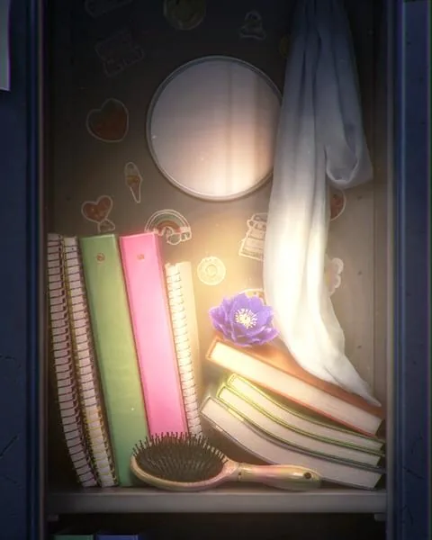
Black hellebore
ep.4 In Miranda's locked locker. How did it get there?
thrown awayThe bone by the school
ep.5 Found in the leaves right by the school. Too big for a cat or a dog… And someone just threw it out with the trash.
shadowMiranda's last day
ep.5 There was no one next to Miranda, but the film remembered a shadow. What else does the camera see?
Sheriff + Howard
ep.5 The sheriff and Howard meet in secret by the junkyard and argue about something. What connects them?
📖
fireThe “Shadows of Saintfour” book
ep.5 Urban legends. It survived a fire, some pages are missing. A gift from the librarian to little Nadine. Link to SOS1 →
ep.19 It had the key to the symbols on the plaque in the Tower. Nadine remembered them from childhood.
?
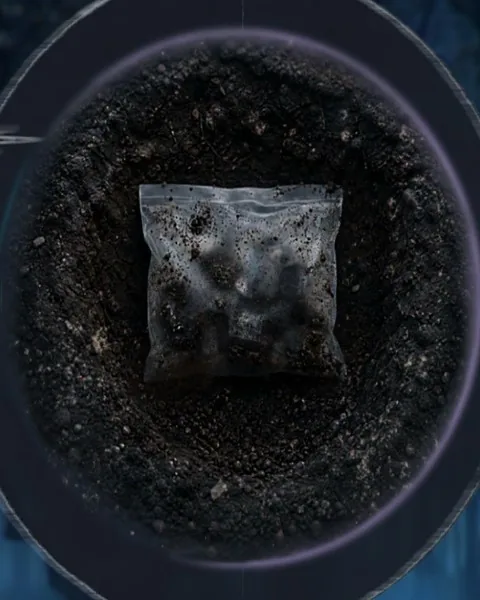
secretburiedPoppy's find
ep.6 Poppy searches abandoned cars at the junkyard. She found something and wants to sell it.
ep.10 She didn't find anything: she was filming from the abandoned cars herself. On the recording: a gunshot, then people in suits bury a body and only after that set up equipment. She buried the recording in the woods and kept a copy on her phone.
off the chartsField meter
ep.8 At Tom's grave, every indicator lit up.
hiddenEquipment at the junkyard
ep.8 Inconspicuous bits of metal with a red light. More than one.
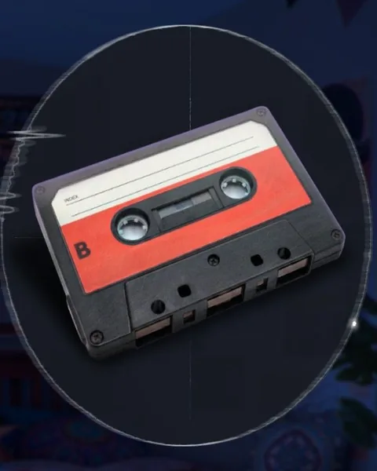
plantedA tape on the windowsill
ep.9 Someone left it on the windowsill. “Everything you need to know is here.”
ep.10 “In danger… remember… The date above the door… carve it out. And then… at the right time… Don't anger… the Doll… The changes are too great… They can't be saved.” Jimmy: it sounds like Nadine's voice.
at Howard's housetakenThe “subject” files
ep.11 Files on people and creatures. “Magnetic field related to Object 1. Shared geomagnetic anomaly.” “Dangerous to study.” Contactless monitoring mode.
ep.11 Handwritten: doesn't stray far from the victim, stalks it, bides its time. “Looking for someone or wants to feed? Are the victims random?”
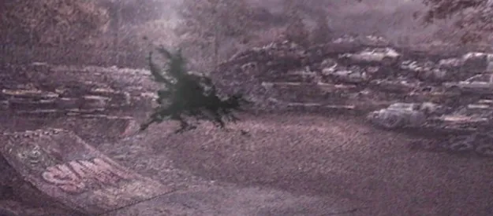
at Howard's houseThe junkyard photo
ep.11 Taken by Warlock equipment. The first shot is empty, the second has a black blot.
closedSteve's case
ep.12 Steve Bailey, 22. Impaled on the spikes of a fence on the border between Old and New Saintfour, in the forest area. Ruled an accident, case closed.
ep.18 His sister confirmed it: he died at the border, not in Old Saintfour itself.
missing“Have you seen me?”
ep.12 A flyer on the archive floor.
1986The 1986 cases
ep.13 Candy Nelson went missing and came back from the swamp on her own. She said she was held by force and described a strange creature. It was all blamed on hellebore, and her stepfather was a suspect.
ep.13 Bobby Turner went missing. The same week Megan White and Freddie Brown disappeared; later they were found alive along with other kids. The kids said someone had taken them.
ep.13 A student, Sam Foster, was found dead in the woods with CP-25 in his blood. Alice: “And that's just the official records.”
helleboreMiranda's bag
ep.13 It's lying in the locker room, nobody cleared it out or looked for it. Inside: rotten hellebore.
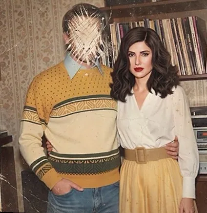
face erasedThe photo in the house
ep.14 The man's face is scratched out. Next to it, a card: “Happy birthday, Sarah…”
ep.16 In 1986, Sarah O'Neil lives in this house.
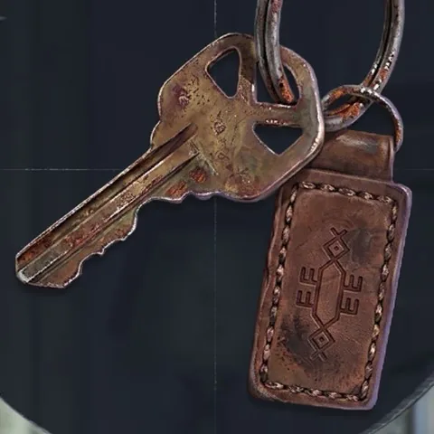
from the pastThe key
ep.14 The keychain has a rune that, according to urban legends, wards off evil.
symbolsThe plaque in the Tower
ep.16 Above the exit. A circle inside a circle, a curved line, spirals and tally marks.
ep.19 Decoded using the book: two spirals are two millennia, 23 notches are years, the Sun and the Moon are an equinox. That's September 23, 2023, the night of the foray, when Nadine came out of the Tower.
ep.19 Decoded using the book: two spirals are two millennia, 23 notches are years, the Sun and the Moon are an equinox. That's September 23, 2023, the night of the foray, when Nadine came out of the Tower.
From the past
The coin
ep.8 Dex found it in an abandoned house. It belonged to the Black Dragons, an old Saintfour gang.
Hair tie
ep.9 Alice gave it to Nadine in the thrift store fitting room.
from 1986The tape with a drawing
ep.16 Mrs. Hill gave it to Nadine in the past.
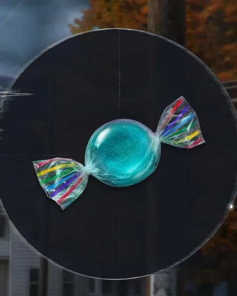
from 1986Mint candy
ep.16 Also from Mrs. Hill.
Theories
🔒 Theories unlock once you've read all 19 episodes: they have spoilers all the way to the end.
site author
Sydney is locked in, and there really is no way out
I went through all of Sydney’s posts, photos and videos. Put them in order and you get a story: Sydney dug up the truth about Warlock, she was lured in and locked up, and the Shadow is slowly taking her over. Her “HELP! THERE’S NO WAY OUT.” should be taken literally.
She found out the truth about Warlock. Officially the corporation studies hellebore for the sake of medicine: Howard wanted to talk about its medical achievements in his interview in 1.01. But at exactly 18:06 Sydney writes that everything we were told about progress is a lie covering up a real hell, and that the whole town isn’t a town. Before that she found files on missing teenagers in an abandoned building, stamped “unfit” and “relocated”. Looks like the town is the corporation’s testing ground, and the teenagers are test subjects.
Sydney Whitley ✍🏽March 12, 18:06
I FOUND IT. God, if I get out and publish all of this… It’ll be the biggest scoop in the history of journalism. The whole town isn’t a town, it’s...
I can’t write the details here. I’ll say just one thing: everything we were told about progress is a lie covering up a real hell. This will be my triumph.
Found a back room in an abandoned building. The whole floor is covered in personal files. These aren’t documents, they’re school questionnaires. Look at these dates. Dozens of teenagers. Officially they’re listed as “resettled” or “missing”. But why are their photos here, in the corporation’s archives, stamped “unfit”, relocated and “**2”?
She made it to the Dead Zone. Her photos show a tower in the fog, a rusty car, a gas mask with a skull and bones in an abandoned house. She was near the Tower and knows more about it than she lets on.
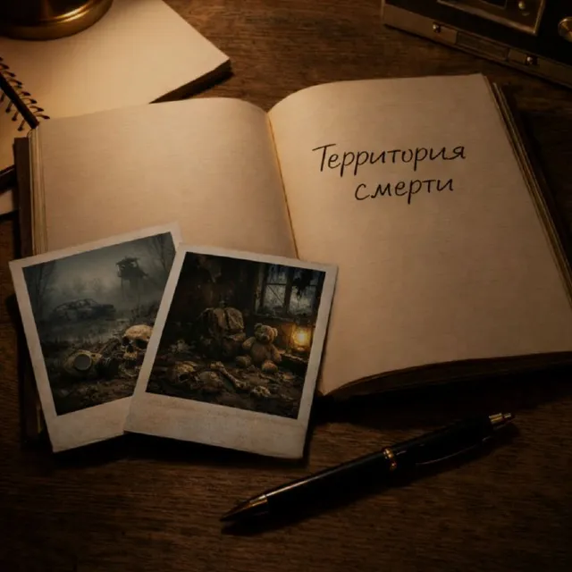
Sydney Whitley ✍🏽March 12, 23:06
A message from a resident of this territory caught my attention.
Territory of death is the truest reading of this abbreviation. Everything here is soaked in death. Bones everywhere, abandoned things…
It feels like this place is slowly swallowing everything alive. Even the silence here is somehow wrong... heavy, crushing... you know?
She was lured in. The Dead Zone post starts with a “message from a resident”. Before it, everything she finds lies on a concrete floor under a flashlight: she’s still wandering the abandoned buildings. After it, everything lies on the same wooden desk with a lamp and a tape recorder. Looks like the message was bait.
Sydney’s posts, March 11
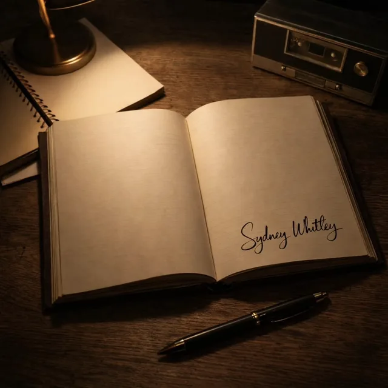
Sydney’s posts, March 12
She was locked in. The window with trees and the door in the photo are just painted on the wall, you can even see paint drips under the window. There’s a pile of empty cans in the corner: she’s been there a long time. On March 18 she writes that she can leave any time, and on November 19 she posts a blurry photo of the same room and a post in Morse code: “HELP! THERE’S NO WAY OUT.”
Sydney Whitley ✍🏽March 18, 19:06
It's so calm and safe here. I have everything I need: a comfy bed, my favorite camera and a window with a beautiful view. I can leave anytime I want. But for now... for now I like it here too much ❤️
The Shadow is taking her. At first Sydney sees a man without a face, hears a hum and is scared. Then the hum stops, and she starts drawing the same thing as the kids from the abandoned building, on the same kind of burnt paper. Her reflection in a shop window turns its head on its own, not with her — like the Shadow in Malcolm, and later in Nadine. And the Shadow works on her the same way it does on Nadine: Sydney is “pulled there constantly”, just like Nadine in 1.18 is twice pulled to the Tower “on autopilot”. One moment she feels “too good”, the next she “can’t take it anymore”, and her head is full of “too many ‘other’ voices”.
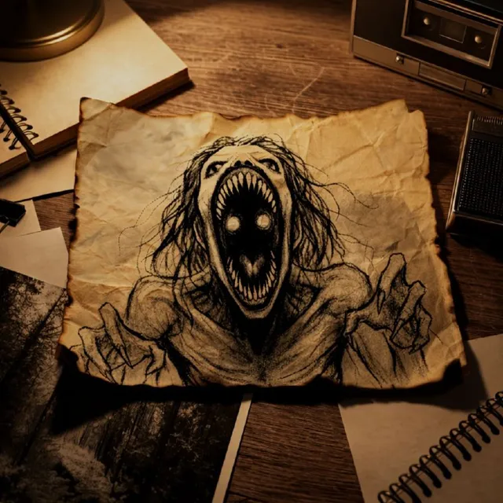
Sydney Whitley ✍🏽March 13, 19:06
The hum has stopped. Now I understand. The black shadow is not the enemy.
I draw too now. It’s so much clearer than words. Words aren’t true. Eyes... there should be eyes everywhere, to see them coming. 👁️ Sleep tight, townsfolk. You’re already being watched over 🌺
Even the numbers in her head are Saintfour. She doesn’t understand them, but she carves them into the desk so furiously that there’s blood on the wood. Swap the numbers for letters by their place in the alphabet and you get SAINTFOUR. The last three are each one short (14, 20, 17 instead of 15, 21, 18), but the word is clear. In the Russian version of the post the numbers are different and spell СЕНТФОР, Saintfour in Russian.
19061520221618
190109142006142017
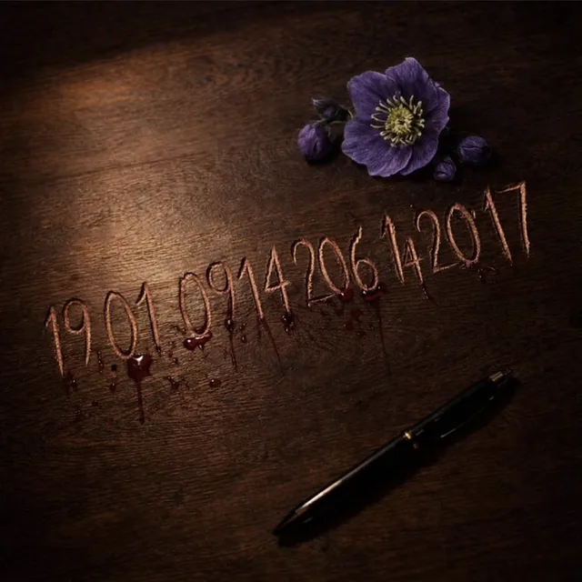
Sydney Whitley ✍🏽March 20, 18:00
Everything’s blurring together… Days, nights, the smell… I’m not even sure I remember where I am. Is this a room in a house? Or have I been in the woods this whole time? These thoughts… they aren’t mine. Too loud. Too different. Too many "other" voices. There are numbers in my head but I don’t understand what they mean. How are they supposed to help?
Something is coming; I can feel it. Something… terrible. I… I can’t just sit here and wait anymore. I can’t.
The real Sydney is breaking through. The Morse code post is the first time in a long while that she writes herself. She apparently can’t say it directly. On the evening of November 19, between 22:10 and 22:20 Moscow time, she comments in fan channels: “Can you see me?”, and then one word bit by bit: “he…”, “..l..”, “…p” (in Russian, the comments are below). At 22:49 she replies to the Morse code post in our channel’s chat with a 🆘 sticker, and at 22:54 in another chat she drops 😶, a face with no mouth. To “Hmm… she used to like it there” she replies 🤕: her head, the voices, and 1.17 is literally called “The Voices in My Head”. Later, in her own channel: “Can you see???”
Sydney’s comments, November 19Sydney’s comments, November 19
The next day, “everything’s fine”. On November 20 Sydney writes: “Sorry about yesterday. I must have overworked myself, so I started seeing things.” But the photo shows her notebook scribbled to shreds: “I’m here”, “I’m scared”, “It’s okay”, “Am I dead?” and dozens of “I can’t”, crossed out and written again. In the post she’s “just not getting enough sleep”, in the notebook she’s scared. It’s as if the Shadow writes the post for her, while the real Sydney breaks through in the notebook.
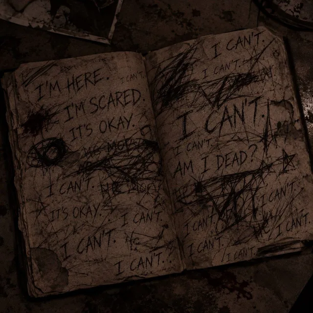
Sydney Whitley ✍🏽November 20, 19:19
Sorry about yesterday. I must have overworked myself, so I started seeing things. I’m fine, really. I’m just… not getting enough sleep.
Conclusion. Sydney dug up that Warlock is experimenting on the town, and she was gotten rid of: lured in and locked in a room with a painted window. Now the Shadow is inside her — the same one that was in Malcolm and Nadine. Sydney speaks its words and only breaks through herself in code and emojis. Nobody sees her, just like Nadine doesn’t see the Unknown in 1.04: maybe she’s stuck in the same place, outside of time. She isn’t even sure anymore whether she’s alive.
Future Nadine is guiding herself
The most beautiful theory about SOS2: Nadine isn't alone, because she's always right there — just from the future. And she's the one leaving herself clues.
The photo from behind. In 1.04 Nadine is alone in an empty hallway and gets a photo of herself from behind, taken a second ago. Whoever took it is standing a couple of steps away, but Nadine doesn't see anyone. Then, for the first time, the game lets you play as the Unknown. If you take another photo, their hand gets into the shot, and the skin tone matches the look the player picked for Nadine.
The Unknown leads her to Miranda's open locker, where the hellebore is. When she sees the flower, Nadine immediately understands where her visions come from: it was the same with her grandpa.
SOS2, 1.04SOS2, 1.04
Why she can't see herself. Later Nadine even sees Miranda's ghost, but here there's nothing. It looks like two versions of the same person just can't meet. If Nadine had seen herself, she'd have been scared, wouldn't have gone to the locker, and none of what happened next would have happened.
The tape. In 1.09 Nadine leans out the window and feels a tape on the windowsill. It was left there just now: it hasn't even had time to get wet. On the tape are scraps of phrases: “The date above the door… carve it out”, “Don't anger… the Doll…”. Nadine can't tell whose voice it is. But Jimmy hears it right away: it's her voice.
SOS2, 1.09
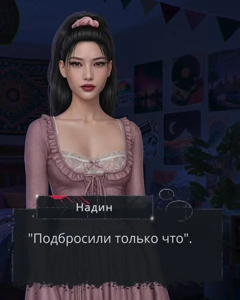
SOS2, 1.09SOS2, 1.09
The label on the back is written in “unfamiliar rounded handwriting”. Maybe someone else labeled the tape. Or maybe future Nadine changed more than we can imagine.
The date above the door. In episode 19 it turns out that the symbols above the Tower exit are a date. The tape asked her to carve it out, and someone has already done it. Nadine wonders herself: “Was someone in the Tower before me?”
Hellebore under the pillow. In 1.18 Nadine twice goes “on autopilot” in one day, and whole chunks drop out of her memory. And in the morning there's hellebore under her pillow. Maybe she's putting the flowers there herself, to get back where she needs to be.
SOS2, 1.16SOS2, 1.18
Early version: it was a vision. Until episode 16 it seemed that 1986 was just something Nadine imagined. A hum, the beeping of Darren's device, unbearable pain, and then everything like a dream, backwards. But Nadine came back with a tape, a mint candy and someone else's clothes. So she really was there.
SOS2, 1.16SOS2, 1.16
+ the Unknown's hand changes color along with Nadine's look.
+ Jimmy recognizes his sister's voice on the tape.
+ one of the episodes is called “A Guest from the Future”.
How time works: lines, worlds and “Dark”
Imaginary time. The term comes up as early as 1.01 in class, and Darren explains it in 1.18. Imaginary time, he says, is used as a handy calculation trick, but that doesn't mean it can't exist. “We're used to thinking of time as a straight line. But physics allows that our line is just one of the axes.” The Tower, he thinks, transforms time: by stepping through the door, Nadine chose a different direction and “slipped off the line”. “To you it looks like traveling to the past, but really you just entered a different point of the same structure.”
Simultaneity. The game really does show this again and again. In 1.05 Nadine at the junkyard says “Everything will be fine”, and right after her, Nadine in Old Saintfour says the same thing. In 1.15 the scene repeats word for word. As if both are happening at the same time.
The sign in the shop. In 1.16 there's a wooden plate on Mrs. Hill's wall: three interlaced loops with a flower in the middle. It's the symbol from the series “Dark”, where three times are tied into one loop. Only here there's a flower in the center, and in Saintfour the key to time is hellebore.
SOS2, 1.16
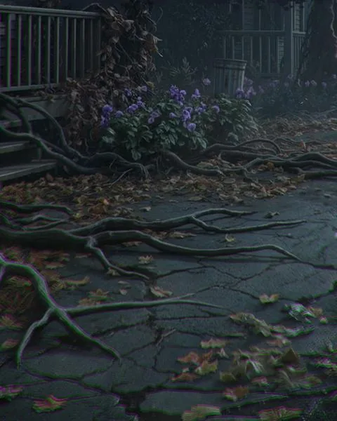
SOS2, 1.05
There are two versions of how exactly it works.
One line, many doors. Past, present and future lie on one line, and the doors in the Tower lead to important dates: 1986, 1996 and so on. The future affects the past just as the past affects the future. Then someone from the future could have interfered in 1986, and in this line Sarah never defeated the evil.
Two mirror worlds. Sarah's world and Nadine's world. The people in them are the same, but the events are reversed. Sarah laid Pisadeira to rest, John was stopped, the Masked Man left. Nadine had none of that. The Tower is a bridge between the worlds, and both can only be saved if they pass on what they know to each other. In “Dark”, both worlds were born from a third, broken one.
Ground zero. In SOS2 there's a shot of Sarah's group of four standing as stone statues overgrown with hellebore. Maybe that's the point where time broke.
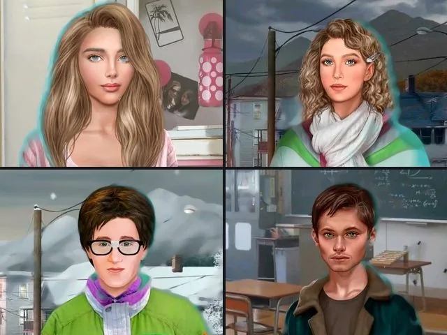
SOS1SOS2, 1.16
Choices from SOS1. The writer, Anna, officially confirmed that choices from SOS1 will count. So the difference between the worlds isn't the studio picking a bad ending, it's in the plot itself.
+ SOS2, 1.16: the “Dark” symbol right in Mrs. Hill's shop.
+ SOS2, 1.05 and 1.15: the same phrase in two times.
+ SOS1 choices officially count.
− it's still unclear whether anyone besides Nadine goes through the Tower.
Where the visions and the shadows on film come from
It started with Miranda. In 1.01 Nadine sees a shadow behind her, then a silhouette in the school restroom. Miranda's house smells sweet and acrid. Then it gets worse: a deer in an alley, a spider-like creature by a truck at the junkyard. And every time, there are purple flowers nearby.
SOS2, 1.01SOS2, 1.05SOS2, 1.06
Pollen. Miranda had been to Old Saintfour, right at the anomaly. There was hellebore in her locker, pollen settled on her clothes and things, and later Nadine touched her tapes and camera. In SOS1 the sap of this flower is the base of CP-25, and a light touch was enough for Sarah to have nightmares for a whole season. There, hellebore is also a gateway to the World of Dreams.
But not everything is a vision. The shadow behind Miranda showed up on Alice's film in 1.05, and everyone can see film. There are three explanations.
A defect. Alice shoots on film and develops it by hand, says “maybe it was overexposed” and stops Nadine: “Careful, don't move it yet.” In the 19th century, mistakes like that produced “ghost photos”.
The field. Darren thinks the object's field gives off light the eye can't see, but film can.
Someone really is there. The simplest explanation: someone really is following the girls.
SOS2, 1.05SOS2, 1.02
Everyone sees it. In 1.15 at the hospital, hellebore vines wrap around an Owl, and it happens in front of all the kids, not just Nadine.
SOS2, 1.15SOS2, 1.15
And in 1.19 the film stays silent. Nadine is sitting in her room and catches a dark silhouette out of the corner of her eye, slipping behind her. Alice looks at her without blinking, as if she's figured something out, and takes out her camera: “Don't move.” Right before the click, a sickening wave washes over Nadine, and right after she feels very light. The photo pops out and develops, but Alice just snorts: “I don't see anything.” And then Jimmy freezes in the doorway and stares straight ahead in horror.
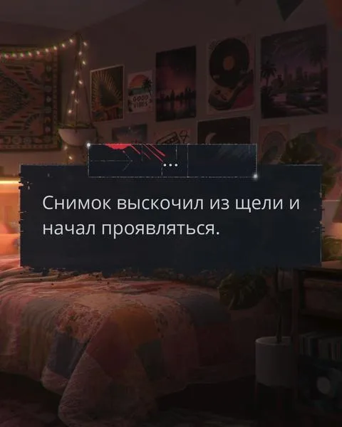
SOS2, 1.19
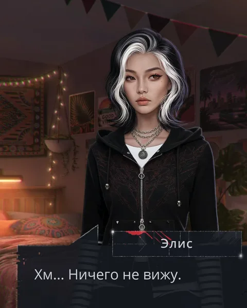
SOS2, 1.19SOS2, 1.19
In 1.05 the shadow behind Miranda showed up on film, but in 1.19 the shadow behind Nadine didn't make it into the photo, even though Nadine feels it and Jimmy sees it. Maybe the new shadow doesn't show up on film. Or maybe the click just scared it off, and the shot was already empty.
+ the visions start near Miranda and her things.
+ SOS1: a small dose of the flower gave Sarah a whole season of nightmares.
+ what Nadine sees, the film and Alice see too.
− Alice herself admits the photo might just be overexposed.
− SOS2, 1.19: there's no shadow in the photo of Nadine, though Jimmy sees it.
The Faun wasn't defeated
Who the Faun is. According to the SOS1 legend, fauns came from the World of Dreams. They gave people harvests and health, and took children in return. People killed them with crystal-tipped arrows, but one survived and went into hiding. John, also known as William, stole children for centuries to bring it back with a ritual using a crystal needle. And the Faun lives at other people's expense: “another sixty-five years”.
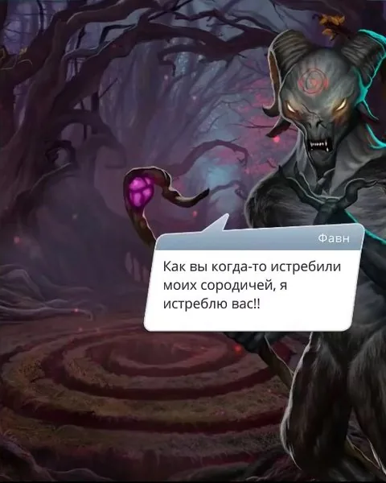
SOS1, 2.08
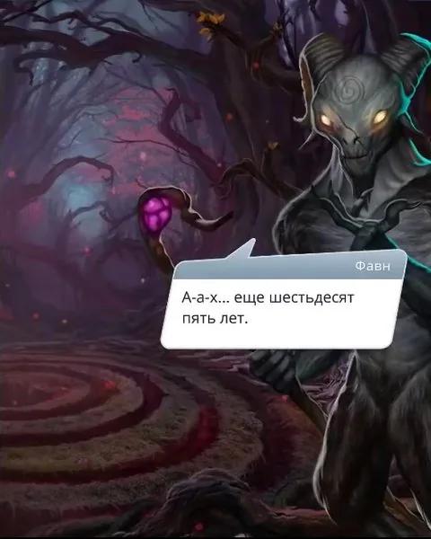
SOS1, 2.07SOS1, 2.07
The date. Sarah and her friends defeated the Faun in 1986, a week before Halloween. And in 1.15 Nadine ends up in 1986 a few days before Halloween. Exactly that week.
What surfaces in SOS2. In the woods of 1986 there's a wooden statue with horns. The shadow children in 1.13 sing the rhyme “A little boy went out to roam… no use calling”. In SOS1 a children's song was bait too: Sam's ghost says it was “sung by the one who did this to me”.
SOS2, 1.16SOS2, 1.13
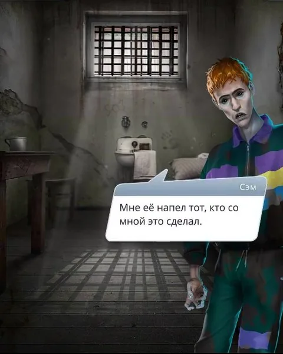
SOS1, 1.07
The sleeping four. In SOS1 John admits: “The purple flowers put me to sleep, kept me in suspended animation.” The kidnapped kids were laid in a ring of hollows with flowers. And in SOS2 there's a shot of Sarah, Candy, Bobby and Derek standing as stone statues overgrown with hellebore. Maybe it's not a monument. Maybe in this line they were simply put to sleep.
If the battle was lost, Saintfour's curse was never lifted, and the Faun might turn out to be the main villain of SOS2, not Howard.
SOS2SOS1, 2.08
+ Nadine ends up in 1986 exactly during the week of the battle.
+ SOS2, 1.16: a horned statue in the woods of 1986.
+ SOS1, 2.07: the flowers keep people in suspended animation.
− In SOS1 it's Derek who says “He's back”, and he means the Masked Man, not the Faun.
Pisadeira in Saintfour
Who she is. In SOS1 she's Eira Pisada. Long ago she hid her baby in a well while running from a chase and never found it again. Her crying turned into laughter, and Eira became a curse. She possesses mothers, imitates other people's voices, comes to people in their sleep. Her doll seems to “choose” its owner.
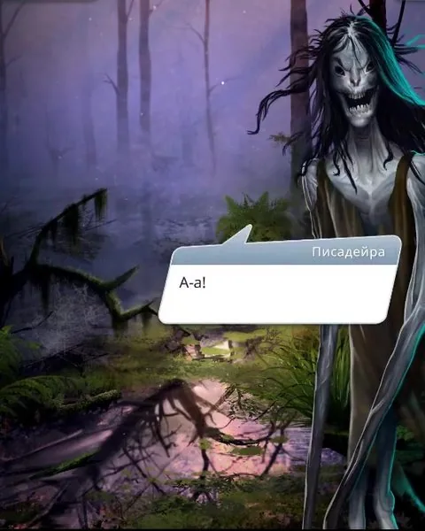
SOS1, 1.10SOS1, 1.05
Nadine's mom. Since episode 4, her mom has constant migraines. In 1.10 Nadine wakes up at night and sees her mom standing by the stairs smiling a strange, predatory smile. Nadine calls 911, and the “operator” tells her to hide under the bed. But he knows her name and never once asks for her address. A long-armed creature is waiting under the bed, and then Nadine wakes up: “A dream…”
SOS2, 1.10SOS2, 1.10
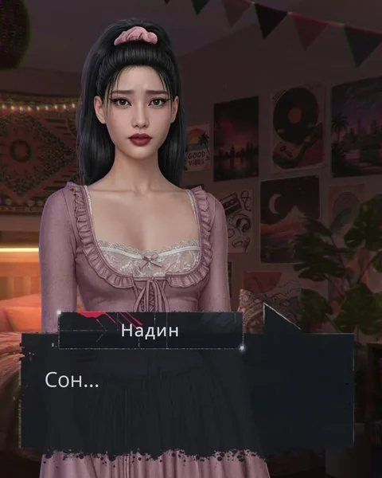
SOS2, 1.10
A dream or not. Many people are sure it was just a dream and none of it really happened. But in SOS1 Sarah saw the truth precisely in her dreams, through Mrs. Hill's dream catcher. And a stranger's voice on the phone is exactly what Pisadeira could do. Just like the shadow that speaks in Poppy's voice in 1.13.
The doll. In SOS1 the doll chooses its owner itself. In 1.02 in Mrs. Hill's shop it falls off the shelf right onto Candy: “That doll didn't fall for nothing. It chose you.” Candy refuses to take it, but in 1.05 Candy's mom finds the doll on her daughter's bed. And in 1.07 the doll suddenly turns up in Sarah's room. Mrs. Hill explains it was once made to protect against Pisadeira.
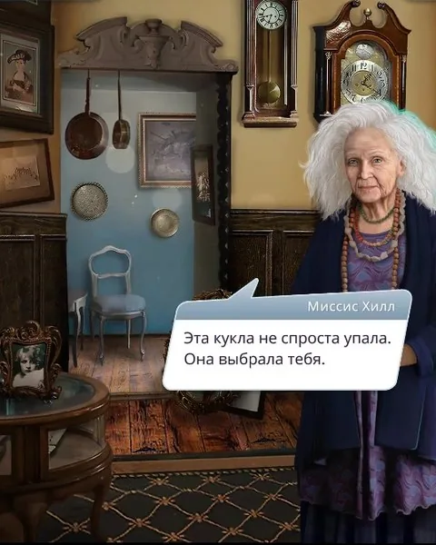
SOS1, 1.02
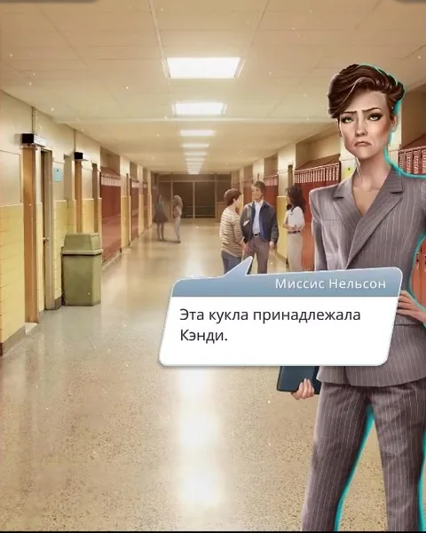
SOS1, 1.05SOS1, 1.07
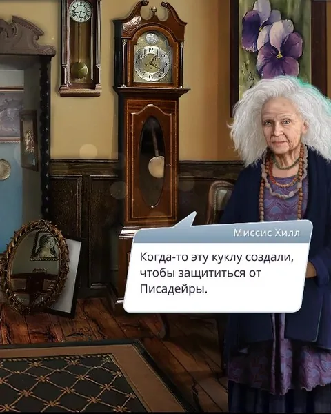
SOS1, 1.07
The doll in SOS2. The tape warns: “Don't anger… the Doll…”. And in 1.15 Nadine passes out, and her friends carry her into the abandoned Old Saintfour hospital. There she hears crying and sees a girl with a doll in a wheelchair. It looks like Candy.
SOS2, 1.15
+ SOS2, 1.10: the “operator” knows her name but doesn't ask for the address.
+ SOS2, 1.13: a stranger's voice in the dark.
+ SOS2, 1.15: a girl with a doll who looks like Candy.
− in SOS1 Pisadeira was laid to rest: they returned her child's bones and the cross.
Who is the woman at the gate
She doesn't age. The woman appears twice. In 1.11 she stands at Howard's gate and repeats words from Nadine's dream, and Poppy, right next to her, doesn't even notice her. In 1.16, in 1986, she catches Nadine on the street: “You can't be here. You're a stranger.” And in all these years she hasn't changed one bit. She smells of mothballs, like old clothes in a closet.
Time glitches. Time acts strangely around her. If in 1.11 you repeat the line from the start of the scene, she seems to get stuck: static runs across the screen and she starts retelling Nadine's dream about her mom and the bed. As if two timelines overlapped for a second.
There are two versions, and both are about the same thing: she's stuck.
Version one: a lost soul. Black long-armed silhouettes are everywhere in SOS2: behind Miranda on film, at the junkyard, in the locker room. The first book didn't have any. But it does have a scene that explains them.
In 1.08 Stephanie tells Sarah a story from her childhood. When her grandpa died, her grandma couldn't accept it and started looking for a way to reach him. One night little Stephanie opened a forbidden door: her grandma was beating a drum, and shadows with long fingers were crawling along the walls. Her grandma hugged her and said: “No, sweetie, these aren't monsters. These are the lost souls of people.” Some souls linger among the living. Over time their shape gets distorted, they get lost in the labyrinths of madness and forget who they were. All that's left is a vague purpose from the past.
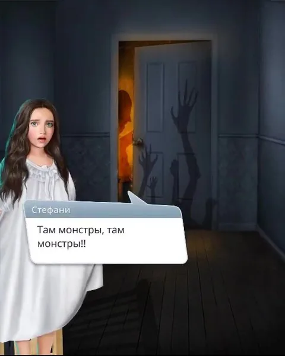
SOS1, 1.08
In 2.08 Mrs. Hill says her name: Elizabeth. They were friends, found the witches' records together, and then Elizabeth “got carried away with magic”. Soon after that night she died.
Now put Stephanie's grandma next to the woman at the gate. The same wavy reddish-brown shoulder-length hair, the same blouse with a big bow. Only the face is dead and twisted. Exactly what Elizabeth talked about: “Over time their shape gets distorted.”
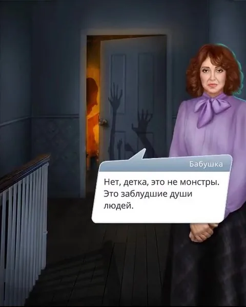
SOS1, 1.08SOS2, 1.16SOS2, 1.11
Version two: a time traveler. In 1.19 Nadine comes to this idea herself. The woman also went through the Tower, but stayed too long and lost her mind for good. That's why she's the same in both times and immediately sees that Nadine is “not from here”. And Nadine is afraid of becoming like her.
The versions don't contradict each other. A soul stuck between worlds and a person stuck between times could turn out to be the same thing in Saintfour.
Only she isn't kind. At first it seems there's something warm left in her: she calls Nadine to a “warm place”, as if she remembers that people should be led away from the cold of the grave. But if you replay the scene in the alley, the “warmth” is something else. The woman leads Nadine to a manhole where the laundromat dumps boiling water: “The steam will melt your joints, they'll become flexible and warm. The flesh will be softer.” And before that she says: “He told me.”
SOS2, 1.16SOS2, 1.16
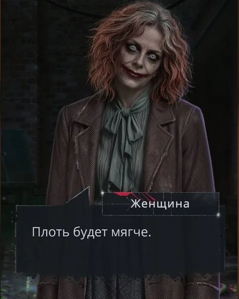
SOS2, 1.16
It looks like all that's left of her is one purpose: to lead people somewhere warm. And someone, that very “he”, is using it.
She's afraid of Mrs. Hill. At the last moment Mrs. Hill walks into the alley and saves Nadine. And then something strange happens. The woman who didn't even flinch when her foot twisted and her ankle turned out, presses herself against the wall at the sight of the old lady and crawls toward the exit, glancing at her in fear.
SOS2, 1.16SOS2, 1.16
She feels no pain, yet she's afraid of one elderly antique dealer. So Mrs. Hill can do something. After all, she and Elizabeth found the witches' records together, and maybe she knows more about lost souls than she told Sarah.
What doesn't add up. Mrs. Hill just waves it off: a crazy woman, she's been wandering around here for years, the locals stopped listening to her long ago. That's not how you talk about your best friend. She and Elizabeth dug through the witches' lair together, shared everything, and Mrs. Hill would recognize her under any distortion. So either nothing of Elizabeth is left in this woman — not even a face her friend would remember — or it isn't her at all, but someone simply wearing her shape.
Or there's a third option, the saddest one. Mrs. Hill understood everything but didn't show it in front of a strange girl. And the woman crawled away not out of fear, but out of shame: her friend saw what she had become.
+ SOS1, 1.08: long-armed shadows on the walls and the words about lost souls, word for word.
+ SOS1, 2.08: Mrs. Hill's friend was named Elizabeth, and she practiced magic.
+ Stephanie's grandma and the woman at the gate have the same hairstyle and bow blouse.
+ SOS2, 1.11 and 1.16: she doesn't age, repeats Nadine's dream, and at the gate only Nadine sees her.
+ SOS2, 1.16: “You're a stranger.” She knows Nadine isn't from here.
+ SOS2, 1.16: at the sight of Mrs. Hill she crawls to the exit in fear.
− SOS2, 1.16: Mrs. Hill calls her crazy and doesn't recognize her best friend in her.
Fours and curses
Saint Four. Saintfour is almost “holy four”. Long ago the witches cursed the town: whoever deserves it will suffer until a new four replaces them. Sarah names the first four: Annette, William, Eira and the mask maker. Three of them sent Annette to the stake. The artist Frederick White painted her execution with hellebore paint, and the curse went into the painting.
SOS1, 2.04
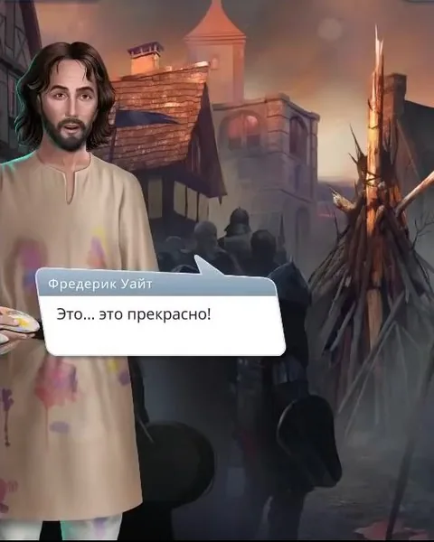
SOS1, 3.08
In the SOS1 finale Sarah says it out loud, and the Masked Man answers with a question that gives you chills.
SOS1, 3.10
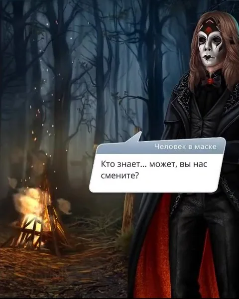
SOS1, 3.10
The seventh ending. On the Courage + Feed Your Inner Demon path, Sarah and her friends burn the Masked Man and become the new four themselves. Their curses: Sarah will become a shadow that brings death wherever she steps. The lost will hear Candy's crying and follow it to their doom. Bobby will become trees that try to break free. Derek will go mad from immortality.
The Masked Man says outright that someday brave people like them will have to free the cursed. Maybe that's Nadine's task.
The curses in SOS2. All of this is already in the second book. A shadow behind Miranda and in the corner of Nadine's room. A child crying and whispering in the library. People overgrown with flowers: the boy from the prologue, Nadine herself in her vision.
SOS2, 1.17SOS2, 1.12
A new four. If the change happens every ten years, then in SOS2 a new four is already forming: Nadine, Rudy, Alice and Poppy or Darren. There's even a “SAINTFOUR HIGH” banner hanging in the hallway in Alice's photo. And the demon meter from SOS1, where “He deserved it!” feeds the demon and “Poor guy!” starves it, might quietly still be counting.
SOS1, 3.08
+ SOS1, 3.10: “maybe you'll take our place?”
+ the curses of the seventh ending show up in SOS2 almost word for word.
+ SOS2: the “SAINTFOUR HIGH” banner.
− the seventh ending is just one of seven, and SOS1 choices count.
− in the recorded playthrough the circus “is gone forever”.
site author
18:06 and 02:59: Saintfour's two minutes
I rewatched the whole first book and noticed a time that repeats too often to be a coincidence.
SOS1, 1.01. Adult Sarah wakes up on the couch after a dream about the past. The clock says 18:06. A minute later there's a knock on the door, and an envelope is lying on the floor: an invitation to Mrs. Hill's funeral. The whole story begins with this letter, and Sarah returns to Saintfour. In the finale it turns out the Masked Man wrote the letter.
SOS1, 1.06. The classroom of Miss Baker, who was possessed by Pisadeira. And again 18:06, only now the hands jerk forward and immediately jump back. Time literally gets stuck on one minute, right next to the curse.
SOS1, 1.01SOS1, 1.06SOS1, 1.06
Mrs. Hill warned about this back in the first season, when the clocks in her shop stopped: “Animals and time always know when trouble is coming.”
SOS1, 1.02
SOS2, 1.03. Miranda's mom says that on her last day Miranda called her brother at exactly 18:06 and hung up right away. She never answered again. And then came her death, which starts Nadine's whole investigation.
SOS2, 1.03
So both books start at the same minute. There, it's the letter that brings Sarah back to Saintfour. Here, it's the call after which Miranda was gone.
And 18:06 again. This time even shows up outside the game. In Sydney Whitley's Telegram channel, while she's digging into what the corporation is hiding, she finds a stash in a wall: a broken clock with the hands frozen at 18:06. And her post “I FOUND IT” went up at exactly 18:06.
Sydney Whitley ✍🏽March 11
Going deeper. Found someone's stash in the wall. A broken clock (the hands frozen at 18:06). A single sneaker stained with something black and sticky. A notebook. With drawings! 😨
And maybe Miranda didn't call for no reason. What if at 18:06 time stumbled again, and she felt it.
And what about 02:59. This part is more of a guess. The clocks on all SOS2 covers show 02:59 — exactly one minute before 3 AM, the “witching hour”, when evil is strongest. Something is about to happen, but never does. And in America, where Saintfour is, the clocks jump from 2:00 straight to 3:00 in spring, so on that night the minutes from 2:00 to 2:59 simply don't exist. So the covers are frozen on a minute that doesn't exist once a year. If 02:59 is time frozen on the outside, then 18:06 is the minute from which everything inside goes downhill.
SOS2, episode covers
Mrs. Hill knows everything
The right thing for the right person. Mrs. Hill always hands it over at the right time. On her very first day she offers Sarah a dream catcher: with it “you can see the images of trapped spirits in your dreams”. The doll “chooses” Candy on its own. Before the battle with Pisadeira, it's Mrs. Hill who explains the ritual. And when she leaves to stay with her daughter, she leaves the shop to Sarah, and after the shop is wrecked Sarah finds the crystal needle that will later kill the Faun. As if the old lady knew how it would all end.
Who she won't sell to. She won't sell anything to Mr. Davis, the museum director. For years he begged her for White's painting “Purple Poison” with black hellebore — “but she wouldn't budge”.
SOS1, 2.04SOS1, 2.08SOS1, 2.08
Elizabeth. She admits to Sarah that she sees her younger self in her. Only she always had a loyal friend, Elizabeth. Together they found the witches' records. Then Elizabeth went into magic, and Mrs. Hill went into antiques, things that keep history.
In SOS2. In 1.16 Nadine ends up at her shop of all places. A painting with hellebore hangs there — maybe that very “Purple Poison”. Mrs. Hill gives Nadine a candy for free, just like she once gave Sarah things. And then she brings up Sarah herself and says her full name, as if she knows Nadine will need it. And the woman at the gate crawls away in fear at the sight of Mrs. Hill.
SOS2, 1.16SOS2, 1.16SOS2, 1.16
+ SOS1: the dream catcher, the ritual, the needle — all through her.
+ SOS2, 1.16: a painting with hellebore and the “Dark” symbol in her shop.
+ SOS2, 1.16: she tells Nadine Sarah's full name.
− the Masked Man wrote the letter about her funeral, so she didn't predict the date of her death.
Dex's kitten is Sarah's pet
The kitten in the chat. Dex shows his kitten, and it looks a lot like Sarah's pet from SOS1. It would be a simple coincidence if that pet hadn't been cursed.
The dog in the shop. In 1.02 Sarah and Candy drop by Mrs. Hill's, and her black dog Tiny suddenly goes wild: eyes bloodshot, foam on its fangs. It looks like it's lunging at the girls. But when everything calms down, Candy is holding the doll that fell on her from the shelf right during the attack. It looks like the dog wasn't going for the girls but for Pisadeira's doll behind them. And it only showed up at Mrs. Hill's the day before.
SOS1, 1.02SOS1, 1.02
The cat in the window. A couple of nights later, in 1.04, a black cat asks to be let in through Sarah's window. Sarah doesn't remember any animals in the shop besides the dog, but somehow she knows right away whose cat it is. And later, when Mrs. Hill offers her a pet to choose, she says that one “chose you first”.
SOS1, 1.04
It's the same creature. In 2.07 John says the pet is “just like me” and once belonged to his sister. In the finale the Masked Man explains it all: the pet tried to save Annette and didn't make it in time, the curse hit it too, and since then it's been immortal and changes shape. That's why the choice between a cat, a dog and a raven doesn't break anything. The dog in the shop and the cat in the window are the same animal.
SOS1, 2.07SOS1, 3.10
But what about “it died”? Sarah answers that her pet died in Baltimore a couple of years ago, and the Masked Man calls it lucky: so she set it free. But a creature that's immortal and changes shape may not have died at all, just become someone else. For example, a kitten belonging to a boy from another time.
SOS1, 3.10
+ SOS1, 3.10: the pet is immortal and changes shape.
+ SOS1, 1.02: the dog goes wild exactly when the doll falls off the shelf.
− apart from a similar kitten in a photo, there are no other links to Dex yet.
Whose kids are Dex and Poppy
Dex and Poppy keep turning up next to traces of the Black Dragons, the gang from SOS1.
The coin. In 1.08 Dex shows a gold coin with a dragon: he found it in an abandoned house, and it's a coin of “the Black Dragons, an old Saintfour gang”. How does he know that? And it's not just a similar coin. In SOS1, 3.04, Sarah visits Cherry in his cell, and he gives her exactly the same one: he made it for luck and asks her to give it back when he gets out. Cherry made the coin himself, for himself. So Dex is holding the thing Cherry entrusted to Sarah. Of course, the gang could have made more coins like it later. But if not, past and present are woven together a little too tightly here.
SOS2, 1.08SOS1
The father is Brownie. In 1.18 it turns out Poppy has a knife scar on her back. At the hospital her dad said she was playing and ran into a knife. Poppy herself thinks otherwise.
SOS2, 1.18
In SOS1 there's a “dragon” who never parts with his knife. In 2.02 Brownie ambushes Sarah on the street and puts a knife to her throat. His eyes are black: he's on CP-25 from the “forest healer”. In 2.07 he wipes his knife on a deer carcass. A man who in 1986 attacked a schoolgirl with a knife while high could easily, thirty-odd years later, have drunk himself into not remembering what he did to his daughter.
SOS1, 2.02SOS1, 2.02SOS1, 2.07
Then Dex and Poppy are half-siblings on their father's side. He's 18, she's 17, so they could have different mothers. And Dex looks like Brownie: the same black hair and dark eyes.
SOS2SOS1, 2.07
Dex is Aaron's son, Poppy is Cherry's daughter. Both ride motorcycles, and Poppy's early look resembles Cherry. But this version is hard to believe. Cherry is an SOS1 favorite, and the writer is unlikely to make him a father who stabbed his daughter in a drunken rage. Besides, when the kids visit Ethan Coleman's thrift store — Cherry's twin brother — he'd probably recognize his niece right away.
Poppy is Cherry's granddaughter. This version removes the main objection. In 1986 Cherry is about twenty-five, and he says himself he was often on the road and rarely in Saintfour. He could easily have settled in another town: in the '90s he'd have had a son or daughter, and in the late 2000s, Poppy. Then someone from the family moved back to Saintfour. In that case the drunk father with the knife isn't Cherry but his child. Ethan might not recognize his brother's granddaughter: nowhere does it say the brothers kept in touch. And it's no accident Poppy gets a cherry lip gloss and a dragon look.
CherrySOS2
Just kids of the “dragons”. The calmest option. Dex and Poppy don't have to be related; their parents were just in the same gang, and the gang called itself a family. That explains how Dex knows the coin and why Ethan might know Poppy by sight.
+ SOS2, 1.18: Poppy's drunk father went at her with a knife.
+ SOS1, 2.02: Brownie, high, attacks a schoolgirl with a knife.
+ SOS1, 3.04 and SOS2, 1.08: Dex has the very coin Cherry made for luck.
+ SOS2: Poppy has a dragon look and a cherry-colored leather jacket.
− Poppy has her father's last name, Emerson, and Dex is Hawk. With the same father, he'd have to carry his mother's name.
− Brownie is a nickname; his real last name is never said in SOS1. The drunk father could be anyone.
A skater on two timelines
A Warlock man wounded the guy in the beanie with the skateboard in the woods, and the order came: “return to the starting point”. The guy never came home. And in 1986 a guy with a skateboard comes up to Nadine. Hardly a coincidence.
SOS2, 1.08SOS2, 1.16
So far there are no similarities besides the skateboard. It's just a hunch that none of this is random.
Open questions
Who did Howard “release” into the zone and what happened to them?The two missing guys? And isn't one of them Malcolm Brown?The dark-haired guy from the prologue looks like Malcolm from his profile picture: black hair, leather jacket.Malcolm Brown and Lewis Holt: they went missing together in Old Saintfour.Malcolm Brown (Nadine recognized him in the Tower) and most likely Lewis Holt, the red-haired guy from the prologue.
What happened to Miranda in Old Saintfour and who was with her?Tom, an Owl. He was by her house on the day she died.
Is Dex connected to Malcolm Brown?They're both Owls.
How did Miranda really die?In her last recording she asks for help…
Did Miranda leave a note?There was no note. The sheriff didn't find one.
Who is C.M.B.?Charlotte Maria Bowie, Darren's mom.
Who's in the gray car and what do they want?Maybe Warlock employees?Howard came to the school in the same car, only white.
Who sent Nadine the photo of herself from behind?Future Nadine?
Who is the “he” who found Nadine?Miranda: “He's looking for you.”The woman: “He told me.”
What were the sheriff and Howard arguing about by the junkyard?
What is Poppy looking for at the junkyard?Something about Miranda?Nothing: she was filming the junkyard itself from the abandoned cars.
Whose blood is on the watchman?Nobody's. It was fake, a prank.
Why doesn't Poppy like the principal?He dated her mom and dumped her. And he runs errands for Howard.
Why did Tom stop showing up for work?He was already dead.
What photo did Darren show Dex?His mom's pictures of strange places in Old Saintfour.
Who is lying in the hole?Thomas Knightley.
Who killed Tom?On Poppy's recording there's a gunshot, and people in suits bury the body. Poppy: looks like the corporation.A bullet hole in the temple, so a person fired the shot.
Whose equipment is hidden at the junkyard?On Poppy's recording, the same people set it up.Warlock's.
Who is the man in the suit and who does he work for?Warlock?Warlock.
Why is Nadine the only one who sees the visions?Poppy didn't see the woman at the gate.But everyone saw the vines wrap around the Owl.Jimmy saw something too: “W-who is that?”
Where did the guy in the beanie go after the “return to the starting point”?Howard blames the Owls.Howard blames the Owls. Definitely not the Owls.
Who left Nadine the tape and what's on it?A warning for Nadine.Jimmy: the voice sounds like hers. Future Nadine?
What are the “date above the door” and the “doll” from the warning on the tape?The symbols above the Tower exit turned out to be a date: September 23, 2023, the night of the foray.
Who erased Nadine's board in the newsroom?Howard? There's no direct proof. The newsroom lock was broken.
What's going on between Dex and Poppy?
What is “Object 1”?The Tower in the Dead Zone?Darren's mom called the Tower the Obscura.
Who was in the library before Nadine?It smelled of expensive perfume. Howard downstairs: “Consider this my last warning.”
What secret do Alice and Poppy share?Poppy: “If I break my promise, you can break yours.”
Who carves the dates above the Tower doors?Nadine: if they don't appear on their own, was someone in the Tower before her?
Shadows of Saintfour 1
The first book came out in 2019. The heroine is Sarah O'Neil. The story runs on two timelines: fall and winter of 1986, when Sarah moves to Saintfour as a high schooler, and 1996, when she comes back as an adult. Here's the short version: who's who, the legend, the plot and the endings.
Spoilers for all of SOS1. For how it connects to SOS2, see the “Links to SOS1” tab.
SOS1 characters
Sarah O'Neil
The heroine. In 1986 she moved here from Baltimore with her parents, and in winter she ran back. In 1996 she returned because of Mrs. Hill's letter.
Candy Nelson
Sarah's best friend. Secretly dated Sam. Nearly drowned in a swamp with purple flowers, went missing, turned up in the hospital.
Bobby Turner
Michael's little brother, glasses and asthma. Loves rare flowers. Went missing in season 2, found asleep among flowers.
Derek Nixon
The sheriff's son, a bully, a childhood friend. He's the one who says “He's back” when the mask falls from the tree. The Masked Man killed his father, and his mother once ended up in his circus and died in an alley.
Luke Moring
Came from Chicago, Sam's friend. His parents were hunting for the cursed painting. In the fire at their house, Luke only survives if Sarah is close to him.
Michael Turner
Bobby's older brother, team captain, a “Black Dragon”. Killed the Faun with the crystal needle.
Adele Moring
Luke's sister. Survived the fire, in 1996 she lives in a mansion. Buried the cursed painting in the woods.
Cherry
A thief from the Black Dragons who never gives his real name. Stole the painting from the museum and burned his hands. His twin brother Ethan was a guide at the museum.
Aaron Hill
Mrs. Hill's grandson, leader of the Black Dragons. Later briefly married to Adele.
John Hall
The new kid in 1986. Actually William, Annette's brother. Every 10 years he gives the Faun four children so he can see his mother in the World of Dreams.
Sam
Luke's friend. Ran away from a cruel stepfather, learned the song from Pisadeira, found dead in the woods with CP-25. Later appeared as a ghost. Hover overTap the photo.
Sarah's mom
Left her husband, dated the sheriff. The Masked Man turned her into the circus performer Altlatonin “for being irresponsible”. Sarah tore off her mask.
Sheriff Nixon
Jonathan Nixon, Derek's father. Insisted the disappearances were an isolated case. The Masked Man broke his neck.
Who else was in Saintfour
Mrs. Hill
Eleanor Hill, owner of an antique shop where every wall is covered in clocks. She gives Sarah a dream catcher and a pet, and teaches her words that call the souls of the dead. In season 2 she leaves and puts Sarah in charge of the shop. By 1996 she's gone.
Elizabeth
Young Eleanor Hill's best friend. Together they found the witches' records, and then Elizabeth went into magic. Stephanie's grandma: as a child, her granddaughter saw her ritual and the shadows on the walls. Soon after that Elizabeth died.
Stephanie
Sarah's classmate who invites her to a Columbus Day party. Tells how as a child she saw her grandma's ritual and long-fingered shadows on the walls.
Miss Baker
The new teacher: glasses, blond curls, a nervous tic. Pisadeira possessed her. At the well the monster sheds her body and takes its own shape again.
Megan White
Nine years old. A squirrel leads her into the woods, a shadow treats her to purple candy, and Megan falls asleep. Season 2 and John's hunt for children for the Faun begin with her.
Freddie Brown
Sarah's classmate, they work on a project for Miss Drew together. John asks him to come to the store for poster paper, and Freddie becomes the last child for the Faun.
Mr. Walter
The guard at the Black Dragons' junkyard. Walks around the school with a photo of his son David, asking everyone if they've seen the boy.
Brownie
A Black Dragon who never parts with his knife. He's on CP-25 from the “forest healer” and, at the healer's request, lies in wait for Sarah to scare her.
Muzzle Muncher
A dwarf from the freak show, a former grave robber. He got his mask for greed. In the finale he asks to give his family a photo of him when he was still human.
The Saintfour legend in order
Fauns
long, long ago“Kings of the forest” from the World of Dreams. They gave people health and harvests, and took children in return. People killed them with crystal-tipped arrows. The last Faun remained on earth as a wooden statue, waiting to be brought back to life.
Purple hellebore
around the same timeThe blood of a wounded Faun turned white hellebore purple. The flower cures madness, puts you to sleep for years without aging, and opens the way to the World of Dreams.
The witches' curse
long before AnnetteSaintfour was crawling with witches, and they were hunted. So the witches created a curse for those “who deserve it”: four will torment the town until a new four replaces them.
Annette and William
17th c.A brother and sister with a gravely ill mother. Their mother herself asked Annette to help her pass, and Annette brought herbs from the forest. William never forgave his sister.
The mask maker
17th c.Annette's fiancé, who made masks for the rich. After a fire in his workshop his face was burned, and Annette left him. He “lost everything, including his beauty”, and decided to take revenge.
Eira Maria Pisada
17th c.Unsociable and lonely, but friends with Annette. Rumor has it she ran away from a convent with her baby Herg, hid him in a well and never found him again.
The trial
17th c.The mask maker convinced William and Eira that Annette was a witch. At the trial in the church Eira speaks of love potions, William says his sister killed their mother with herbs, the mask maker says she burned his house. “Mother asked me herself!” But the crowd demands the stake.
curseThe stake
17th c.Annette is burned in the square. Her basket of purple flowers is thrown into the fire. William, Eira and the mask maker get nosebleeds: their hatred turned against them. The witches' curse found its first four.
The painting
17th c.The artist Frederick White painted the execution along with the crowd, using hellebore paints. The curse went into the painting and took the souls of those three. White himself went mad.
Annette's pet
17th c.Tried to save its owner and didn't make it in time. The curse hit it too: it's immortal, changes shape and is looking for a way to make amends. Mrs. Hill gives it to Sarah.
Season 1Pisadeira
This is how Eira became a monster. She possesses people, copies voices and faces, steals children: she's looking for her own.
Season 2John Hall
This is how William became the Faun's immortal servant. Every 10 years, on a blood moon, he gives it four children so he can see his mother in the World of Dreams.
Season 3The Masked Man
This is how the mask maker became the master of the freak show. Once every 10 years he comes to judge the town: he puts masks with hellebore sap on “rotten” people, and they forget themselves.
The trial, the stake and the curse are told by the Masked Man himself in the last episode of SOS1.
The SOS1 plot by season
Season 1: Pisadeira (12 episodes)
1996Sarah gets a letter: Mrs. Hill invites her “to my funeral”. Sarah returns to Saintfour, which she left 10 years ago, and meets Candy, Derek and Bobby. They spend the night in a cabin by the lake.
Episodes 1–4Fall 1986. Sarah moves from Baltimore with her parents. In Mrs. Hill's shop the doll “chooses” Candy. In the woods they find Sam dead: black eyes, purple flowers all around. Candy sinks in a bog, and later long arms drag her into a wall. Mrs. Hill gives Sarah a pet.
Episodes 5–8Candy is missing, there's a curfew. In the woods: an altar of skinned animals, a pit of black mass. The janitor locks Sarah in a storeroom. The doll turns out to be a copy of Pisadeira. Old records have Eira's name and the address “St. Joseph”, which leads them to a convent. Candy is found and taken to the hospital.
Episodes 9–10The Mother Superior tells Eira's story. Miss Baker turns into the monster, the janitor dies. The forester confesses: 10 years ago Pisadeira possessed his wife. Bobby drops his inhaler into the well, and there are a child's bones and a cross down there.
Episodes 11–12The ritual at Eira's grave doesn't work: the cross is missing. At the well Sarah gives Pisadeira the cross, and she takes her child and leaves. CP-25 made from the purple flowers is found in the victims' blood. The Columbus Day party. In 1996 Candy goes missing.
Season 2: the Faun and John (8 episodes)
Episodes 1–2A girl, Megan White, is given purple candy in the woods and disappears. Mrs. Hill leaves and puts Sarah in charge of the shop. The shop gets trashed, and Sarah finds the crystal needle. There's a new kid in class, John Hall. Bobby doesn't come home. A Black Dragons thug says he got CP-25 from the “forest healer”.
Episodes 3–4A dream about the Faun, a bed in purple flowers. In the shop: Frederick White's painting “Purple Poison”. Sarah reads the “Shadows of Saintfour” book in the library, and the library burns down. At the museum there's a White painting of a girl being burned, and the needle is over four centuries old.
Episodes 5–6Deer attack in the woods, Sarah sees an idol of the Faun. The inscription on the needle: “Four hearts will stop.” In a photo of the class of 1930, John hasn't aged.
Episodes 7–8John is William: the Faun gives him youth in exchange for four children every 10 years. Michael kills the Faun with the needle, and it turns to wood and cracks. Bobby is found asleep among the flowers. In 1996 a mask falls from a tree, and Derek says: “He's back.”
Season 3: the Masked Man (10 episodes)
Episodes 1–4Winter after Halloween. A freak show comes to town. Sarah's mom disappears, leaving a note, and Sarah stays with Derek and the sheriff. Behind a red curtain, in a cage, is the circus performer Altlatonin, and Sarah recognizes her mom. Cherry steals the painting from the museum for Luke's parents.
Episodes 5–7The Moring mansion burns. The Masked Man kills Sheriff Nixon. Sarah tears the mask off her mom and flees to Baltimore on a night train. In the train window: the Masked Man.
Episodes 8–91996. Candy and Bobby are missing. Adele says she buried the painting. They dig it up, but at night the Masked Man takes it. He's the one who wrote the letters in Mrs. Hill's name.
Episode 10A bonfire and gallows in the woods. The Masked Man says Derek's mother was in his circus and died in an alley. The story of Annette's trial. From here the ending depends on two things: Courage or Caution, and a “fed” or “starved” demon.
Endings
What the demon isSeason 3 has a hidden meter. Cruel and cynical answers, interest in the show and agreeing with the Masked Man “feed” the demon. Compassion and resisting temptation leave it starving. Together with Courage or Caution, this decides the ending.
Caution + Starve Your Inner DemonThe brightest one. Sarah summons Annette from the painting. She asks for forgiveness, and the Masked Man smashes his mask. The curse is lifted, the circus leaves forever.
Courage + Starve Your Inner DemonThe Masked Man will leave for 10 years, but will take one life. Sarah gives her own instead of Candy's. In the World of Dreams the kind Faun brings her back, or she stays there with John. The circus will return in 10 years.
Courage + Feed Your Inner DemonThe Masked Man is burned on a hellebore pyre. The circus leaves, but the curse passes to Sarah, Candy, Derek and Bobby. This is the very “new four” from the theories.
Caution + Feed Your Inner DemonThe Masked Man asks Sarah to come with him. If she agrees, she leaves with the circus (“The Villain”). If she refuses, she wears a transparent mask and will become a circus performer after death. The circus will return in 10 years.
Special episode“A Member of the Circus Family”: 10 years later Sarah lives in the circus and chooses whom to punish with a mask.
Fan facts
HergThe name of Pisadeira's baby read backwards is “грех”, Russian for “sin”. It only works in Russian.
AltlatoninFrom Atlatonin, the Aztec mother goddess and patron of those born with deformities. That's Sarah's mom's circus name.
Area code 207The flyer about Candy's disappearance has a phone number with the (207) area code. That's the real area code of Maine, where almost all of Stephen King's novels take place.
Pisadeira is realShe's from Brazilian folklore: a thin old woman who sits on sleepers' chests. That's how people explained sleep paralysis.
Hellebore is realHelleborus, the “Christmas rose”. Poisonous, blooms in winter, and in ancient times it was used to “cure” madness.
Et cum spiritu tuoThe spell from SOS1 is real Latin from the Catholic Mass: “And with your spirit. Amen.”
The series “Dark”Many people compare SOS2 to Dark: a letter and a death at the start, time loops, the year 1986, a company next to a dangerous place. Fans also noticed Nadine's yellow raincoat, just like Jonas's.
The bookIn 2024 a book came out, “Shadows of Saintfour. The Camp of Lost Souls”, about Sarah, Candy, Derek and Bobby after the events of the game.
Links to SOS1
What from the first book has already surfaced in the second, and where it might lead. For who the SOS1 characters are and what happened there, see the “SOS1” tab.
What from SOS1 is already in SOS2
Sarah's wardrobe in the thrift store
In 1.09 Nadine tries on clothes in the thrift store of Ethan Coleman, the former museum guide. Almost everything there is what Sarah wore in 1986: the same pieces, the same combinations. Left: Sarah in SOS1, right: Nadine.
SOS1, 1.02SOS2, 1.09
SOS1, 1.02SOS2, 1.09
SOS1, 1.06SOS2, 1.09
SOS1, 1.09SOS2, 1.09
SOS1, 3.05SOS2, 1.09
SOS1, 3.06SOS2, 1.09
SOS1SOS2, 1.09
File: purple hellebore
What it does to people
A gateway to the World of Dreams, where the fauns came from and where the dead go.
Suffocation, realistic hallucinations, deep sleep. If you pull the flower off, the person comes to.
Just a touch, and the poison is already in your blood.
It was used to make CP-25: the drug turned people's eyes black. The “forest healer” made it.
Frederick White's paint and the circus masks are made from it: whoever puts one on forgets themselves, and their body changes.
Children were put to sleep at the Faun's idol in hollows overgrown with the flower.
In SOS2, Darren: it smells sweetish, and in high concentration like blood. A guy who went into the zone without a mask died.
Darren: before the epidemic the flower wasn't this toxic, and then it “went feral as if on command”. Now it's “almost a biological weapon”.
Curses from SOS1 and what we see in SOS2
Sarah
“It will be wherever you step, in the shape of a shadow. The death of people, of nature and of all that exists.”
→
A shadow behind Miranda in Alice's photo, in the restroom, in the drawing. The “death of nature” looks like the Dead Zone.
Candy
“Your crying will be heard by the lost and the outcast. And they will follow it, not knowing they are walking toward their doom.”
→
Crying. In 1.15 Nadine passes out, and her friends carry her into the abandoned hospital. There she hears crying, follows it and sees a girl in a wheelchair. It looks like Candy.
Bobby
“You will strive to break free, and in your desire you will destroy many people… Trees will become your home.”
→
?
Still unclear.maybe it's the branches that wrapped around the Owl at the hospital (1.15)? “Trees will become your home”… a subscriber's theory
Derek
“You will know all the torments of immortality and go mad from them. You will wander the world and punish the innocent for your suffering.”
→
?
Still unclear. An immortal could live among people under a different name.or maybe it's Howard? He hides his age (1.09)… although the writer said Howard is 20. a subscriber's theory
Where the curses come from: in the “Courage + Feed Your Inner Demon” ending, Sarah and her friends burn the Masked Man on a hellebore pyre, and the curse passes to them. According to one theory, SOS2 continues exactly this ending, but there's no direct proof yet.
Fan guesses about who's related to whom
Poppy and Dex are “Dragon” kids Dex has the gang's coin, Poppy has a knife scar from her drunk father. The candidates for father are Brownie, Cherry or Aaron. Details in “Theories”.
Candy is Rudy's mom No arguments yet.
Miranda's mom is the forester's daughter She looks similar and has no name. Against: canonically, the forester's daughter Margaret died young.
Howard is the Masked Man's son He hides his age and came to Saintfour following his father.
Mrs. Turner is related to Bobby Same last name as Bobby and Michael. And in SOS1 there's their mom, Mrs. Turner.
Freddie Brown is related to Malcolm Freddie Brown went missing in 1986, Malcolm Brown in 2023. Same last name.
Don't let them reach you
A mini-game: night in an empty school, creatures crawl toward Nadine from the end of the hallway. Shine your flashlight, tap them to burn them and catch the hellebores.
Shooting hoops with Rudy
Evening, the backyard. Rudy promised not to laugh. Pull the ball down, aim and let go.
0:00:00
▶ PLAY
How far have you read?
Everything after that will be blurred. You can change this anytime in the panel at the top. Episode titles are hidden to avoid spoilers: hover over a number to peek.
What do your characters look like?
You pick their look at the start of the game. We'll show your version on the board.


Sydney Whitley ✍🏽March 12, 18:06